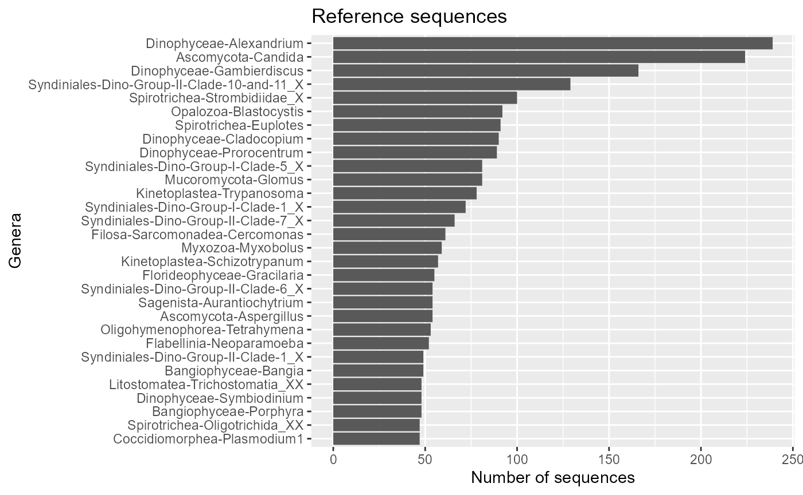
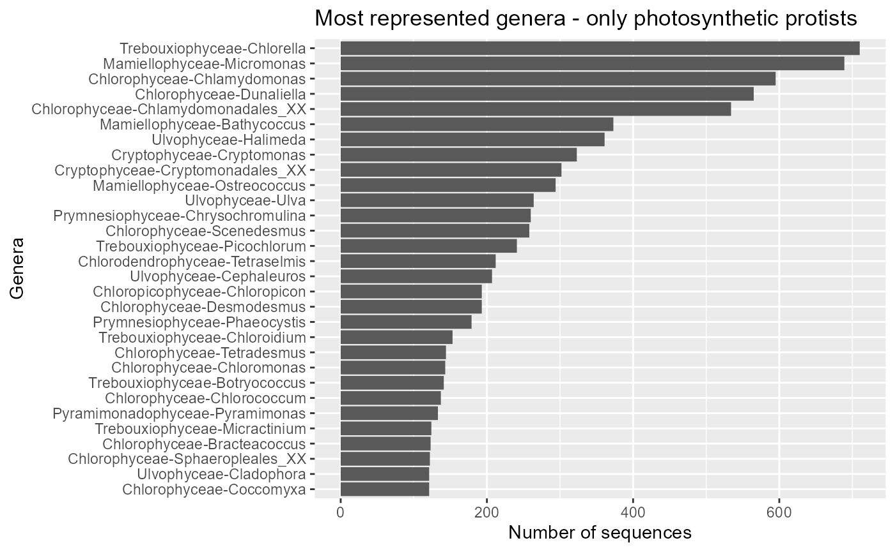
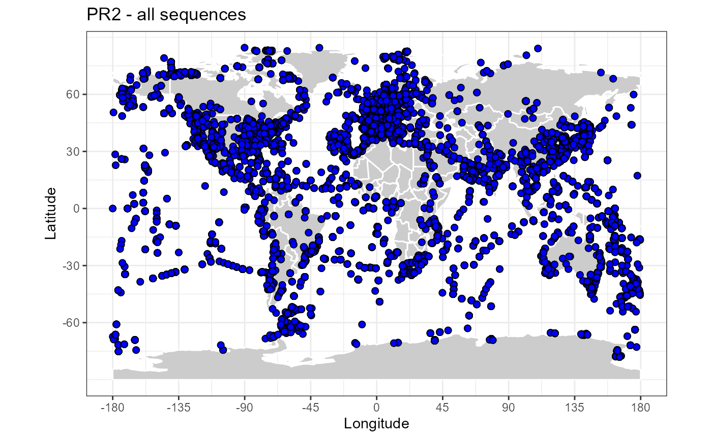
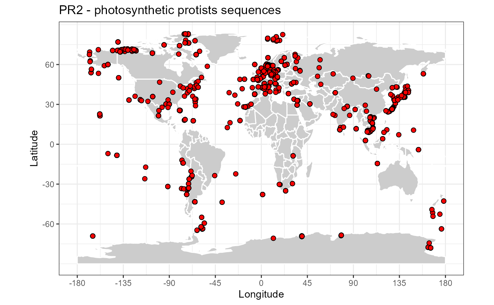

library("ggplot2")
library("dplyr")
library("knitr")
library("forcats")
library("stringr")
library("rworldmap")
library("treemapify")
library("pr2database")
packageVersion("pr2database")
#> [1] '5.0.0'
pr2 <- pr2_database()
pr2_photo <- pr2 %>%
filter((division %in% c("Chlorophyta", "Dinophyta",
"Cryptophyta",
"Haptophyta", "Ochrophyta")) &
!(class %in% c("Syndiniales", "Sarcomonadea")))
pr2_ref <- pr2 %>% filter(!is.na(reference_sequence))PR2 fields
colnames(pr2)
#> [1] "pr2_accession" "domain"
#> [3] "supergroup" "division"
#> [5] "subdivision" "class"
#> [7] "order" "family"
#> [9] "genus" "species"
#> [11] "genbank_accession" "start"
#> [13] "end" "label"
#> [15] "gene" "organelle"
#> [17] "reference_sequence" "added_version"
#> [19] "edited_version" "edited_by"
#> [21] "edited_remark" "remark"
#> [23] "mixoplankton" "seq_id"
#> [25] "sequence" "sequence_length"
#> [27] "ambiguities" "sequence_hash"
#> [29] "gb_date" "gb_division"
#> [31] "gb_definition" "gb_organism"
#> [33] "gb_organelle" "gb_taxonomy"
#> [35] "gb_strain" "gb_culture_collection"
#> [37] "gb_clone" "gb_isolate"
#> [39] "gb_isolation_source" "gb_specimen_voucher"
#> [41] "gb_host" "gb_collection_date"
#> [43] "gb_environmental_sample" "gb_country"
#> [45] "gb_lat_lon" "gb_collected_by"
#> [47] "gb_note" "gb_publication"
#> [49] "gb_authors" "gb_journal"
#> [51] "eukref_name" "eukref_source"
#> [53] "eukref_env_material" "eukref_env_biome"
#> [55] "eukref_biotic_relationship" "eukref_specific_host"
#> [57] "eukref_geo_loc_name" "eukref_notes"
#> [59] "pr2_sample_type" "pr2_sample_method"
#> [61] "pr2_latitude" "pr2_longitude"
#> [63] "pr2_depth" "pr2_ocean"
#> [65] "pr2_sea" "pr2_sea_lat"
#> [67] "pr2_sea_lon" "pr2_country"
#> [69] "pr2_location" "pr2_location_geoname"
#> [71] "pr2_location_geotype" "pr2_location_lat"
#> [73] "pr2_location_lon" "pr2_sequence_origin"
#> [75] "metadata_remark" "pr2_continent"
#> [77] "pr2_country_geocode" "pr2_country_lat"
#> [79] "pr2_country_lon" "eukribo_UniEuk_taxonomy_string"
#> [81] "eukribo_V4" "eukribo_V9"
#> [83] "silva_taxonomy" "organelle_code"Basic statistics
All taxa
Total number of PR2 sequences : 221091
pr2_taxa <- pr2 %>% select(domain:genus, species) %>%
summarise_all(funs(n_distinct(.)))
knitr::kable(pr2_taxa, caption="Number of taxa - all sequences")| domain | supergroup | division | subdivision | class | order | family | genus | species |
|---|---|---|---|---|---|---|---|---|
| 8 | 39 | 104 | 131 | 435 | 1113 | 2409 | 26237 | 53601 |
Photosynthetic protists
Number of photosynthetic protist sequences : 14262
pr2_taxa <- pr2_photo %>% select(domain:genus, species) %>%
summarise_all(funs(n_distinct(.)))
knitr::kable(pr2_taxa, caption="Number of taxa - photosynthetic protist sequences")| domain | supergroup | division | subdivision | class | order | family | genus | species |
|---|---|---|---|---|---|---|---|---|
| 1 | 3 | 3 | 3 | 23 | 60 | 94 | 519 | 1824 |
Reference sequences
Reference sequences are a subset of PR2 representative of taxonomic groups.
Number of reference sequences : 23579
pr2_taxa <- pr2_ref %>% select(domain:genus, species) %>%
summarise_all(funs(n_distinct(.)))
knitr::kable(pr2_taxa, caption="Number of taxa - Reference sequences")| domain | supergroup | division | subdivision | class | order | family | genus | species |
|---|---|---|---|---|---|---|---|---|
| 1 | 9 | 27 | 44 | 201 | 503 | 1218 | 8684 | 13355 |
Sequence length
ggplot(pr2) + geom_histogram(aes(sequence_length), binwidth = 100, fill="blue") +
xlim(0,3000) + xlab("PR2 sequence length") +
ylab("Number of sequences") +
ggtitle("All sequences")
ggplot(pr2_ref) + geom_histogram(aes(sequence_length), binwidth = 100, fill="blue") +
xlim(0,3000) +
xlab("PR2 sequence length") +
ylab("Number of sequences") +
ggtitle("Reference sequences")
Taxonomic composition
pr2_treemap <- function(pr2, level1, level2) {
# Group
pr2_class <- pr2 %>%
count({{level1}},{{level2}}) %>%
filter(!is.na(division)) %>%
ungroup()
# Do a treemap
ggplot(pr2_class, aes(area = n,
fill = {{level2}},
subgroup = {{level1}},
label = {{level2}})) +
treemapify::geom_treemap()
ggplot(pr2_class, aes(area = n,
fill= {{level1}},
subgroup = {{level1}},
label = {{level2}})) +
treemapify::geom_treemap() +
treemapify::geom_treemap_text(colour = "white", place = "centre", grow = TRUE) +
treemapify::geom_treemap_subgroup_border() +
treemapify::geom_treemap_subgroup_text(place = "centre", grow = T,
alpha = 0.5, colour = "black",
min.size = 0) +
theme_bw() +
scale_color_brewer() +
guides(fill = FALSE)
}Genera most represented
All taxa
pr2_genus <- pr2 %>% group_by(class, genus) %>%
count() %>%
ungroup() %>%
top_n(30)
ggplot(pr2_genus) +
geom_col(aes(x=forcats::fct_reorder(stringr::str_c(class,"-",genus), n), y=n)) +
coord_flip() +
ggtitle("Most represented genera - all") +
xlab("Genera") + ylab("Number of sequences")
Reference sequences
pr2_genus <- pr2_ref %>%
group_by(class, genus) %>%
count() %>% ungroup() %>%
top_n(30)
ggplot(pr2_genus) +
geom_col(aes(x=forcats::fct_reorder(stringr::str_c(class,"-",genus), n), y=n)) +
coord_flip() +
ggtitle("Reference sequences") +
xlab("Genera") +
ylab("Number of sequences")
Only photosynthetic protists
pr2_genus <- pr2_photo %>%
group_by(class, genus) %>%
count() %>%
ungroup() %>%
top_n(30)
ggplot(pr2_genus) +
geom_col(aes(x=forcats::fct_reorder(stringr::str_c(class,"-",genus), n), y=n)) +
coord_flip() +
ggtitle("Most represented genera - only photosynthetic protists") +
xlab("Genera") + ylab("Number of sequences")
World sequence distribution
map_get_world <- function(resolution="coarse"){
# Change to "coarse" for global maps / "low" for regional maps
worldMap <- rworldmap::getMap(resolution = resolution)
world.points <- fortify(worldMap)
world.points$region <- world.points$id
world.df <- world.points[,c("long","lat","group", "region")]
}
map_world <- function(color_continents = "grey80",
color_borders = "white",
resolution = "coarse") {
# Background map using the maps package
# world.df <- map_data("world")
world.df <- map_get_world(resolution)
map <- ggplot() +
geom_polygon(data = world.df,
aes(x=long, y = lat, group = group),
fill=color_continents,
color=color_borders) +
# scale_fill_manual(values= color_continents , guide = FALSE) +
scale_x_continuous(breaks = (-4:4) * 45) +
scale_y_continuous(breaks = (-2:2) * 30) +
xlab("Longitude") + ylab("Latitude") +
coord_fixed(1.3) +
theme_bw()
# species_map <- species_map + coord_map () # Mercator projection
# species_map <- species_map + coord_map("gilbert") # Nice for the poles
return(map)
}All taxa
map_world() + geom_point(data=pr2, aes(x=pr2_longitude, y=pr2_latitude),
fill="blue", size=2, shape=21) +
ggtitle("PR2 - all sequences") 
Photosynthetic protists
map_world() + geom_point(data=pr2_photo, aes(x=pr2_longitude, y=pr2_latitude),
fill="red", size=2, shape=21) +
ggtitle("PR2 - photosynthetic protists sequences") 